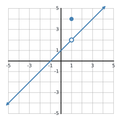
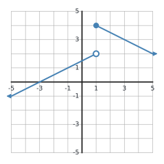
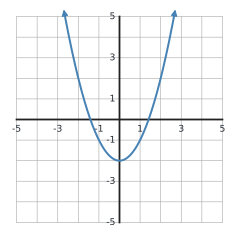

1
For \(f(x)=\dfrac{x^2-9}{x-3}\), determine whether \(f\) is continuous at \(x=3\). Classify the discontinuity and explain.
☐ Knew how to do it ☐ Had to ask for help ☐ Had to look it up
For \(f(x)=\dfrac{x^2-9}{x-3}\), determine whether \(f\) is continuous at \(x=3\). Classify the discontinuity and explain.
Use the graph. Is the function continuous at \(x=1\)? Identify which continuity condition fails and classify the discontinuity.

Let \(f(x)=x+4\) for \(x<2\) and \(f(x)=kx-1\) for \(x\ge 2\). Find \(k\) so that \(f\) is continuous at \(x=2\).
For \(g(x)=\dfrac{x^2-4}{x-2}\), identify the discontinuity and give the value that would make the function continuous at \(x=2\).
Use the graph. Determine whether the function is continuous at \(x=1\) and classify the discontinuity. Support your answer using one-sided behavior.

Give the largest intervals on which \(r(x)=\dfrac{1}{x^2-9}\) is continuous. Explain how the domain determines your answer.
Suppose \(f\) and \(g\) are continuous at \(x=2\), with \(f(2)=5\) and \(g(2)=-1\). Find \(\displaystyle \lim_{x\to2}[3f(x)-2g(x)]\) and justify the step using continuity.
Suppose \(g\) is continuous at \(x=1\) with \(g(1)=4\), and \(f\) is continuous at \(x=4\). Explain why \(f(g(x))\) is continuous at \(x=1\).
The graph shows a continuous function. Use the Intermediate Value Theorem to explain why there must be a zero in \((1,2)\). State the hypotheses you are using.

A student says, “\(f(0)<0\) and \(f(2)>0\), so IVT guarantees a root between 0 and 2.” The function has a vertical asymptote at \(x=1\). Explain why the argument fails.
Let \(h(x)=ax+1\) for \(x<3\) and \(h(x)=x^2-2\) for \(x\ge3\). Find \(a\) so that \(h\) is continuous at \(x=3\).
Create a piecewise function with a removable discontinuity at \(x=2\). Then state exactly how you would redefine one value to make your function continuous.